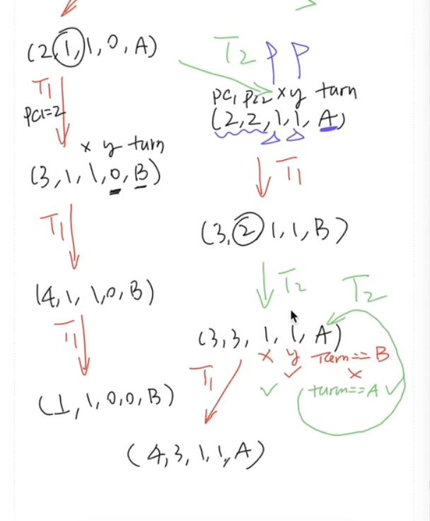

理解并发程序执行
Overview
复习
- 并发程序 = 多个执行流、共享内存的状态机
本次课回答的问题
- Q: 如何阅读理解教科书/互联网/期末试卷上的各种并发程序？
本次课主要内容
- (自动) 画状态机理解并发程序
收获
1、如何理解并发程序？画状态机
- 并发程序 = 多个执行流、共享内存的状态机
- 线程共享内存
- 每一步非确定选择线程执行
- 画状态机就对了，当然，用工具帮你画 (model checker)
原则上可以用纸和笔将程序执行的任何状态都画出来
在画状态机的过程中，对程序语言的形式语义、并发算法的执行有第一手的认识
但并发编程比大家想象得困难
2、(自动) 画状态机理解并发程序
并发算法的设计困境
- 不敢不画：谁知道有什么奇怪情况会发生？
- 不敢乱画：画错了就都完了
就是 Model Checker 和 可视化
Model checking is a method for formally verifying finite-state systems——只要能为系统建立模型，就能用 prove by brute-force 证明正确/找到错误。
Model checker 的一切就是状态机！
- Safety: 没有红色节点，红色的状态不可到达，是bug
- G(V,E) 上的可达性问题
- (Strong) Liveness: 从任意状态出发，都能到达绿/蓝色状态
- G(V,E) 上的什么问题？从黑色节点出发，通过一个环，返回自己（强连通分量解决）
3、工具的力量
没有人能阻止程序员写 bug，但工具可以。
至今为止我们用过的自动化工具 (他们拯救了你无数次)
- Type safety check
-Wall -Werror- Differential testing
- Model checker
- ……
这门课的另一个 take-away
- 操作系统是一个巨大的工程
- 没有工具 (编程、测试、调试……)，不做系统
一、画状态机理解并发程序
1、一个互斥算法
互斥：保证两个线程不能同时执行一段代码。 插入 “神秘代码”，使得 sum.c (或者任意其他代码) 能够正常工作
- 假设一个内存的读/写可以保证顺序、原子完成
#include "thread.h"
#define N 100000000
long sum = 0;
void Tsum() {
for (int i = 0; i < N; i++) {
sum++;
}
}
int main() {
create(Tsum);
create(Tsum);
join();
printf("sum = %ld\n", sum);
}
$ gcc -O0 a.c && ./a.out
sum = 101852382
$ gcc -O1 a.c && ./a.out
sum = 200000000
$ gcc -O2 a.c && ./a.out
sum = 200000000
通过：objdump 命令去看
2、失败的尝试
int locked = UNLOCK;
void critical_section() {
retry:
if (locked != UNLOCK) {
goto retry;
}
locked = LOCK;
// critical section
locked = UNLOCK;
}
和山寨 alipay.c 完全一样的错误
- 处理器默认不保证 load + store 的原子性
问题的原因在于下面的语句，不是原子性的
3、正确性不明的奇怪尝试 (Peterson 算法)
A 和 B 争用厕所的包厢
- 想进入包厢之前，A/B 都要先举起自己的旗子
- A 确认旗子举好以后，往厕所门上贴上 “B ” 的标签
- B 确认旗子举好以后，往厕所门上贴上 “A ” 的标签
- 然后，如果对方的旗子举起来，且门上的名字不是自己，等待
- 否则可以进入包厢
- 出包厢后，放下自己的旗子
Peterson 算法提出了一种互斥的协议，参考Peterson算法 - 维基百科，自由的百科全书 (wikipedia.org)
该算法满足解决临界区问题的三个必须标准：互斥访问, 进入（即不死锁）, 有限等待（即不饿死）
// flag[] is boolean array; and turn is an integer
flag[0] = false;
flag[1] = false;
int turn;
// P0:
flag[0] = true;
turn = 1;
while (flag[1] == true && turn == 1)
{
// busy wait
}
// critical section
...
// end of critical section
flag[0] = false;
// P1:
flag[1] = true;
turn = 0;
while (flag[0] == true && turn == 0)
{
// busy wait
}
// critical section
...
// end of critical section
flag[1] = false;
4、习题：证明 Peterson 算法正确，或给出反例
进入临界区的情况
- 如果只有一个人举旗，他就可以直接进入
- 如果两个人同时举旗，由厕所门上的标签决定谁进
- 手快 🈶️ (被另一个人的标签覆盖)、手慢 🈚
一些具体的细节情况
- A 看到 B 没有举旗
- B 一定不在临界区
- 或者 B 想进但还没来得及把 “A” 贴在门上
- memory ordering
- A 看到 B 举旗子
- A 一定已经把旗子举起来了 (!@^#&!%^(&^!@%#
5、Prove by Brute-force!
枚举状态机的全部状态 (假设没有乱序、每步执行一行)
- (PC1,PC2,x,y,turn); peterson-simple.c
int x = 0, y = 0, turn = A;
void TA() {
while (1) {
/* PC=1 */ x = 1;
/* PC=2 */ turn = B;
/* PC=3 */ while (y && turn == B) ;
critical_section();
/* PC=4 */ x = 0; } }
void TB() {
while (1) {
/* PC=1 */ y = 1;
/* PC=2 */ turn = A;
/* PC=3 */ while (x && turn == A) ;
critical_section();
/* PC=4 */ y = 0; } }
原则上可以用纸和笔将程序执行的任何状态都画出来
在画状态机的过程中，对程序语言的形式语义、并发算法的执行有第一手的认识

#include "thread.h"
#define A 1
#define B 2
atomic_int nested;
atomic_long count;
// 这个函数判断，是不是任何时候只有一个线程在临界区
// 看到计数器为2的话，说明有两个人在临界区里
void critical_section() {
long cnt = atomic_fetch_add(&count, 1);
assert(atomic_fetch_add(&nested, 1) == 0);
atomic_fetch_add(&nested, -1);
}
int volatile x = 0, y = 0, turn = A;
void TA() {
while (1) {
/* PC=1 */ x = 1;
/* PC=2 */ turn = B;
/* PC=3 */ while (y && turn == B) ;
critical_section();
/* PC=4 */ x = 0;
}
}
void TB() {
while (1) {
/* PC=1 */ y = 1;
/* PC=2 */ turn = A;
/* PC=3 */ while (x && turn == A) ;
critical_section();
/* PC=4 */ y = 0;
}
}
int main() {
create(TA);
create(TB);
}
6、Peterson's Protocol Verified 🎖
我们 (在完全不理解算法的前提下) 证明了 Sequential 内存模型下 Peterson's Protocol 的 Safety。它能够实现互斥。
并发编程比大家想象得困难
- 感受一下 dekker.py
- “Myths about the mutual exclusion problem” (IPL, 1981)
和一些现状
- 今天有非常坚 (内) 实 (卷) 的理论体系
- 小心编译器和多处理器硬件
- 更好的 peterson 算法：peterson-barrier.c (哪些 barrier 是多余的吗？)
把每一步内存访问都拆开了
在每个一内存访问的边界上都增加了 BARRIER
- 既是 compiler barrier，不允许编译器随意 re-order 内存访问
- 还是 memory barrier，运行很长时间的话，也不会出问题
#include "thread.h"
#define A 1
#define B 2
#define BARRIER __sync_synchronize()
atomic_int nested;
atomic_long count;
void critical_section() {
long cnt = atomic_fetch_add(&count, 1);
int i = atomic_fetch_add(&nested, 1) + 1;
if (i != 1) {
printf("%d threads in the critical section @ count=%ld\n", i, cnt);
assert(0);
}
atomic_fetch_add(&nested, -1);
}
int volatile x = 0, y = 0, turn;
void TA() {
while (1) {
x = 1; BARRIER;
turn = B; BARRIER; // <- this is critcal for x86
while (1) {
if (!y) break; BARRIER;
if (turn != B) break; BARRIER;
}
critical_section();
x = 0; BARRIER;
}
}
void TB() {
while (1) {
y = 1; BARRIER;
turn = A; BARRIER;
while (1) {
if (!x) break; BARRIER;
if (turn != A) break; BARRIER;
}
critical_section();
y = 0; BARRIER;
}
}
int main() {
create(TA);
create(TB);
}
二、(自动) 画状态机理解并发程序
1、画状态机实在太累了
并发算法的设计困境
- 不敢不画：谁知道有什么奇怪情况会发生？
- 不敢乱画：画错了就都完了
解决困境 💡
- 能不能让电脑帮我们画？
- 我们有程序的形式语义 (数学定义)，就能写解释器模拟执行（nemu）
- 说起来容易，但需要写多少代码呢……？
2、年轻人的第一个 Model Checker
选择正确的语言
- 当然是 Python 啦
- 容易 hack 的动态语言
- 丰富的库函数
选正确的语言机制，用 c 或者 c++ 实现就是给自己挖坑
- 模式检查器：model-checker.py，会遍历模型上所有可能的状态
- ~~代码量达到了惊人的 150 行~~！
- UNIX Philosophy: 写能合作的程序
- Model checker 只负责输出 “状态图”
- 可视化：visualize.py
model-checker.py:
一定要用 3.7 以上的版本才行，3.6.9 亲测不行
import inspect, ast, astor, copy, sys
from pathlib import Path
threads, marker_fn = [], []
def thread(fn):
'''Decorate a member function as a thread'''
global threads
threads.append(fn.__name__)
return fn
def marker(fn):
'''Decorate a member function as a state marker'''
global marker_fn
marker_fn.append(fn)
def localvar(s, t, varname):
'''Return local variable value of thread t in state s'''
return s.get(t, (0, {}))[1].get(varname, None)
def checkpoint():
'''Instrumented `yield checkpoint()` goes here'''
f = inspect.stack()[1].frame # stack[1] is the caller of checkpoint()
return (f.f_lineno, { k: v for k, v in f.f_locals.items() if k != 'self' })
def hack(Class):
'''Hack Class to instrument @mc.thread functions'''
class Instrument(ast.NodeTransformer):
def generic_visit(self, node, in_fn=False):
if isinstance(node, ast.FunctionDef):
if node.name in threads:
# a @mc.thread function -> instrument it
in_fn, node.decorator_list = True, []
elif node.decorator_list:
# a decorated function like @mc.mark -> remove it
return None
body = []
for line in getattr(node, 'body', []):
# prepend each line with `yield checkpoint()`
if in_fn: body.append(
ast.Expr(ast.Yield(
ast.Call(func=ast.Name(checkpoint.__name__, ctx=ast.Load()),
args=[], keywords=[]))) )
body.append(self.generic_visit(line, in_fn))
node.body = body
return node
if not hasattr(Class, 'hacked'):
hacked_ast = Instrument().visit(ast.parse(Class.source))
hacked_src, vars = astor.to_source(hacked_ast), {}
# set a breakpoint() here to see **magic happens**!
exec(hacked_src, globals(), vars)
Class.hacked, Class.hacked_src = vars[Class.__name__], hacked_src
return Class
def execute(Class, trace):
'''Execute trace (like [0,0,0,2,2,1,1,1]) on Class'''
def attrs(obj):
for attr in dir(obj):
val = getattr(obj, attr)
if not attr.startswith('__') and type(val) in [bool, int, str, list, tuple, dict]:
yield attr, val
obj = hack(Class).hacked()
for attr, val in attrs(obj):
setattr(obj, attr, copy.deepcopy(val))
T = []
for t in threads:
fn = getattr(obj, t)
T.append(fn()) # a generator for a thread
S = { t: T[i].__next__() for i, t in enumerate(threads) }
while trace:
chosen, tname, trace = trace[0], threads[trace[0]], trace[1:]
try:
if T[chosen]:
S[tname] = T[chosen].__next__()
except StopIteration:
S.pop(tname)
T[chosen] = None
for attr, val in attrs(obj):
S[attr] = val
return obj, S
class State:
def __init__(self, Class, trace):
self.trace = trace
self.obj, self.state = execute(Class, trace)
self.name = f's{abs(State.freeze(self.state).__hash__())}'
@staticmethod
def freeze(obj):
'''Create an object's hashable frozen (immutable) counterpart'''
if obj is None or type(obj) in [str, int, bool]:
return obj
elif type(obj) in [list, tuple]:
return tuple(State.freeze(x) for x in obj)
elif type(obj) in [dict]:
return tuple(sorted(
zip(obj.keys(), (State.freeze(v) for v in obj.values()))
))
raise ValueError('Cannot freeze')
def serialize(Class, s0, vertices, edges):
'''Serialize all model checking results'''
print(f'CLASS({repr(Class.hacked_src)})')
sid = { s0.name: 0 }
def name(s):
if s.name not in sid:
sid[s.name] = len(sid)
return repr(f's{sid[s.name]}')
for u in vertices.values():
mk = [f(u.obj, u.state) for f in marker_fn if f(u.obj, u.state)]
print(f'STATE({name(u)}, {repr(u.state)}, {repr(mk)})')
for u, v, chosen in edges:
print(f'TRANS({name(u)}, {name(v)}, {repr(threads[chosen])})')
def check_bfs(Class):
'''Enumerate all possible thread interleavings of @mc.thread functions'''
s0 = State(Class, trace=[])
# breadth-first search to find all possible thread interleavings
queue, vertices, edges = [s0], {s0.name: s0}, []
while queue:
u, queue = queue[0], queue[1:]
for chosen, _ in enumerate(threads):
v = State(Class, u.trace + [chosen])
if v.name not in vertices:
queue.append(v)
vertices[v.name] = v
edges.append((u, v, chosen))
serialize(Class, s0, vertices, edges)
src, vars = Path(sys.argv[1]).read_text(), {}
exec(src, globals(), vars)
Class = [C for C in vars.values() if type(C) == type].pop()
setattr(Class, 'source', src)
check_bfs(Class)
visualize.py:
import sys, re, graphviz, jinja2, json, markdown, argparse
from pathlib import Path
from collections import namedtuple
EMPTY = '␡'
COLORS = { None: '#f1f5f9',
'red': '#fecaca',
'yellow': '#fef08a',
'green': '#bbf7d0',
'blue': '#bfdbfe',
'purple': '#e9d5ff'
}
Vertex = namedtuple('Vertex', 'name state marks')
Edge = namedtuple('Edge', 'name u v t')
State = namedtuple('State', 'pcs lvars gvars')
vertices, edges, threads = {}, [], []
code_lines, pcmap, gvar, lvar = [], {}, [], []
def parse_input():
def CLASS(cl):
global hacked_src
hacked_src = cl
def STATE(u, state, marks):
vertices[u] = Vertex(name=u, state=state, marks=marks)
def TRANS(u, v, t):
edges.append(Edge(name=f'{u}-{v}', u=vertices[u], v=vertices[v], t=t))
if t not in threads:
threads.append(t)
for line in sys.stdin.readlines():
eval(line)
def parse_src():
md_lines = [' :::python']
for line in hacked_src.splitlines():
if 'yield' not in line:
md_lines.append(f' {line.replace(" ", " ")}')
html = markdown.markdown('\n'.join(md_lines), extensions=['codehilite'])
code_lines.extend(re.search(r'<code.*?>(.*)</code>', html, re.DOTALL).group(1).rstrip().splitlines())
new_pc = 0
for pc, line in enumerate(hacked_src.splitlines()):
if 'yield' not in line:
pcmap[pc + 1] = (new_pc := new_pc + 1)
def parse_vars():
gv, lv = set(), set()
for v in vertices.values():
for t, val in v.state.items():
if t not in threads: gv.add(t)
else: lv |= set((t, var) for var in val[1])
gvar.extend(sorted(list(gv)))
lvar.extend(sorted(list(lv)))
def parse_state(s):
gvars = [s[g] for g in gvar]
lvars = ['⊥' for _ in enumerate(lvar)]
pcs = [-1 for _ in enumerate(threads)]
for t in [t for t in threads if t in s]:
tpc, tstate = s[t]
pcs[threads.index(t)] = pcmap[tpc + 1]
for vname, val in tstate.items():
lvars[lvar.index((t, vname))] = val
return State(pcs, lvars, gvars)
def reduce(tree_only=False):
tree, depth, leaf = [], {'s0' : 0}, {'s0': True}
updated, rnd = 0, 0
while updated + len(threads) > rnd:
rnd += 1
def expand():
found = False
for e in edges:
_, u, v, t = e
if u.name in depth and v.name not in depth and t == threads[-rnd % len(threads)]:
depth[v.name] = depth[u.name] + 1
leaf[v.name] = True
leaf[u.name] = False
tree.append(e)
found = True
return found
while expand():
updated = rnd
others = []
if not tree_only:
tnames = set(e.name for e in tree)
for e in edges:
name, u, v, t = e
if name not in tnames:
w = filter(lambda e1: e1.v.name == u.name, edges).__next__()
if (leaf[e.u.name] and w.t == e.t) or (depth[u.name] >= depth[v.name]):
others.append(e)
return tree, others
parse_input()
parse_src()
parse_vars()
parser = argparse.ArgumentParser(description='Visualize modeler checker outputs')
parser.add_argument('--tree', '-t', help='Draw tree', action='store_true')
parser.add_argument('--reduce', '-r', help='Draw reduced graph', action='store_true')
args = parser.parse_args()
if args.reduce or args.tree:
edges, others = reduce(args.tree)
else:
edges, others = edges, []
COLORS |= dict(zip(threads, ['#be123c', '#1d4ed8', '#eab308', '#4d7c0f']))
g = graphviz.Digraph('G', filename='/tmp/a.gv',
graph_attr={ 'fontsize': '12', 'layout': 'dot', 'nodesep': '0.75' })
metadata = { 's0': vertices['s0'].name }
with g.subgraph(name='legend') as c:
c.node_attr = { 'style': 'filled', 'fontname': 'Courier New', 'shape': 'Mrecord' }
# draw vertices and code blocks
for v in vertices.values():
ps = parse_state(v.state)
color = ([None] + [col for col in v.marks if col])[-1]
gvals, lvals = '| '.join([f'{g}={v.state[g]}' for g in gvar]), ''
for i, t in enumerate(threads):
if i != 0: lvals += '|'
lvals += '{' + '| '.join([f'{t}.{l}={v.state.get(t, (0, {}))[1].get(l, EMPTY)}' for t1, l in lvar if t1 == t]) + '}'
label = '{' + '{' + gvals + '}' + '|' + '{' + lvals + '}' + '}'
label = label.replace('True', 'T').replace('False', 'F')
c.node(v.name, id=v.name, label=label, fillcolor=COLORS.get(color, color))
lines = [ '<div class="codehilite">']
for i, line in enumerate(code_lines):
cl = 'new' if i + 1 in ps.pcs else ''
lines.append(f'<pre class="{cl}"><code>{line if line else " "}</pre></code>')
lines.append('<div class="vars">')
for i, nm in enumerate(gvar):
lines.append(f'<pre><code>{nm} = {ps.gvars[i]}</code></pre>')
for i, (t, nm) in enumerate(lvar):
lines.append(f'<pre><code>{t}.{nm} = {ps.lvars[i]}</code></pre>')
lines.append('</div></div>')
metadata[v.name] = '\n'.join(lines)
# draw edges
for idx, (name, u, v, t) in enumerate(edges + others):
ps_old, ps_new = parse_state(u.state), parse_state(v.state)
c.edge(u.name, v.name, id=name, fontcolor=COLORS[t], color=COLORS[t], label=t, fontname='Helvetica')
diff = lambda x, y: f'<span class="new">{y}</span> <span class="old">({x})</span>' if x != y else x
lines = [ '<div class="codehilite">']
for i, line in enumerate(code_lines):
if i + 1 in ps_new.pcs: cl = 'new'
elif i + 1 in ps_old.pcs: cl = 'old'
else: cl = ''
lines.append(f'<pre class="{cl}"><code>{line if line else " "}</pre></code>')
lines.append('<div class="vars">')
for i, nm in enumerate(gvar):
lines.append(f'<pre><code>{nm} = {diff(ps_old.gvars[i], ps_new.gvars[i])}</code></pre>')
for i, (tname, nm) in enumerate(lvar):
lines.append(f'<pre><code>{tname}.{nm} = {diff(ps_old.lvars[i], ps_new.lvars[i])}</code></pre>')
lines.append('</div></div>')
metadata[name] = '\n'.join(lines)
TEMPLATE = '''
<!DOCTYPE html>
<html>
<head>
<meta charset="utf-8">
<meta name="viewport" content="width=device-width, initial-scale=1.0">
<style>
body {
margin: 0; padding: 8px 16px; box-sizing: border-box;
overflow: hidden;
}
#container {
overflow: auto;
width: 100%;
height: 100%;
position: absolute;
}
.codehilite {
padding: 10px;
}
.old {
background-color: #d4d4d4;
opacity: 0.5;
}
.new {
background-color: #f0abfc;
}
#code {
font-size: 135%;
border: 1px solid;
top: 0;
right: 0;
width: 500px;
position: absolute;
float: right;
background: white;
}
.vars {
position: absolute;
float: right;
top: 5px; right: 505px;
text-align: right;
background-color: white;
padding: 5px;
}
#mouse-circle {
position: absolute;
width: 32px;
height: 32px;
margin: -16px 0 0 -16px;
border: 1px solid green;
background-color: rgba(0, 255, 0, 0.5);
border-radius: 50%;
pointer-events: none;
box-shadow: rgba(0, 255, 0, 0.35) 0px 5px 15px;
}
pre { line-height: 125%; margin: 0; }
td.linenos .normal { color: inherit; background-color: transparent; padding-left: 5px; padding-right: 5px; }
span.linenos { color: inherit; background-color: transparent; padding-left: 5px; padding-right: 5px; }
td.linenos .special { color: #000000; background-color: #ffffc0; padding-left: 5px; padding-right: 5px; }
span.linenos.special { color: #000000; background-color: #ffffc0; padding-left: 5px; padding-right: 5px; }
.codehilite .hll { background-color: #ffffcc }
.codehilite .c { color: #177500 } /* Comment */
.codehilite .err { color: #000000 } /* Error */
.codehilite .k { color: #A90D91 } /* Keyword */
.codehilite .l { color: #1C01CE } /* Literal */
.codehilite .n { color: #000000 } /* Name */
.codehilite .o { color: #000000 } /* Operator */
.codehilite .ch { color: #177500 } /* Comment.Hashbang */
.codehilite .cm { color: #177500 } /* Comment.Multiline */
.codehilite .cp { color: #633820 } /* Comment.Preproc */
.codehilite .cpf { color: #177500 } /* Comment.PreprocFile */
.codehilite .c1 { display: none; color: #177500 } /* Comment.Single */
.codehilite .cs { color: #177500 } /* Comment.Special */
.codehilite .kc { color: #A90D91 } /* Keyword.Constant */
.codehilite .kd { color: #A90D91 } /* Keyword.Declaration */
.codehilite .kn { color: #A90D91 } /* Keyword.Namespace */
.codehilite .kp { color: #A90D91 } /* Keyword.Pseudo */
.codehilite .kr { color: #A90D91 } /* Keyword.Reserved */
.codehilite .kt { color: #A90D91 } /* Keyword.Type */
.codehilite .ld { color: #1C01CE } /* Literal.Date */
.codehilite .m { color: #1C01CE } /* Literal.Number */
.codehilite .s { color: #C41A16 } /* Literal.String */
.codehilite .na { color: #836C28 } /* Name.Attribute */
.codehilite .nb { color: #A90D91 } /* Name.Builtin */
.codehilite .nc { color: #3F6E75 } /* Name.Class */
.codehilite .no { color: #000000 } /* Name.Constant */
.codehilite .nd { color: #000000 } /* Name.Decorator */
.codehilite .ni { color: #000000 } /* Name.Entity */
.codehilite .ne { color: #000000 } /* Name.Exception */
.codehilite .nf { color: #000000 } /* Name.Function */
.codehilite .nl { color: #000000 } /* Name.Label */
.codehilite .nn { color: #000000 } /* Name.Namespace */
.codehilite .nx { color: #000000 } /* Name.Other */
.codehilite .py { color: #000000 } /* Name.Property */
.codehilite .nt { color: #000000 } /* Name.Tag */
.codehilite .nv { color: #000000 } /* Name.Variable */
.codehilite .ow { color: #000000 } /* Operator.Word */
.codehilite .mb { color: #1C01CE } /* Literal.Number.Bin */
.codehilite .mf { color: #1C01CE } /* Literal.Number.Float */
.codehilite .mh { color: #1C01CE } /* Literal.Number.Hex */
.codehilite .mi { color: #1C01CE } /* Literal.Number.Integer */
.codehilite .mo { color: #1C01CE } /* Literal.Number.Oct */
.codehilite .sa { color: #C41A16 } /* Literal.String.Affix */
.codehilite .sb { color: #C41A16 } /* Literal.String.Backtick */
.codehilite .sc { color: #2300CE } /* Literal.String.Char */
.codehilite .dl { color: #C41A16 } /* Literal.String.Delimiter */
.codehilite .sd { color: #C41A16 } /* Literal.String.Doc */
.codehilite .s2 { color: #C41A16 } /* Literal.String.Double */
.codehilite .se { color: #C41A16 } /* Literal.String.Escape */
.codehilite .sh { color: #C41A16 } /* Literal.String.Heredoc */
.codehilite .si { color: #C41A16 } /* Literal.String.Interpol */
.codehilite .sx { color: #C41A16 } /* Literal.String.Other */
.codehilite .sr { color: #C41A16 } /* Literal.String.Regex */
.codehilite .s1 { color: #C41A16 } /* Literal.String.Single */
.codehilite .ss { color: #C41A16 } /* Literal.String.Symbol */
.codehilite .bp { color: #5B269A } /* Name.Builtin.Pseudo */
.codehilite .fm { color: #000000 } /* Name.Function.Magic */
.codehilite .vc { color: #000000 } /* Name.Variable.Class */
.codehilite .vg { color: #000000 } /* Name.Variable.Global */
.codehilite .vi { color: #000000 } /* Name.Variable.Instance */
.codehilite .vm { color: #000000 } /* Name.Variable.Magic */
.codehilite .il { color: #1C01CE } /* Literal.Number.Integer.Long */
</style>
</head>
<body>
<div id="container" data-pan-on-drag data-zoom-on-wheel="min-scale: 0.3; max-scale: 16;">{{ svg }}</div>
<div id="code"></div>
<div id="mouse-circle"> </div>
<script src="https://cdn.jsdelivr.net/npm/svg-pan-zoom-container@0.5.1"></script>
<script type="text/javascript" src="https://cdnjs.cloudflare.com/ajax/libs/jquery/3.5.1/jquery.min.js"></script>
<script> data = {{ data }}; </script>
<script>
$(document).ready(function() {
$("title").remove();
$("#code").html(data[data["s0"]]);
var disp = function() {
var id = $(this).attr("id");
var code = data[id];
$("#code").html(code);
};
$(".node").mouseover(disp);
$(".edge").mouseover(disp);
$(".edge").css('cursor', 'none');
$(".node").css('cursor', 'none');
});
document.addEventListener('DOMContentLoaded', () => {
let mousePosX = 0, mousePosY = 0, mouseCircle = document.getElementById('mouse-circle');
document.onmousemove = (e) => { mousePosX = e.pageX; mousePosY = e.pageY; }
let delay = 6, revisedMousePosX = 0, revisedMousePosY = 0;
function delayMouseFollow() {
requestAnimationFrame(delayMouseFollow);
revisedMousePosX += (mousePosX - revisedMousePosX) / delay;
revisedMousePosY += (mousePosY - revisedMousePosY) / delay;
mouseCircle.style.top = revisedMousePosY + 'px';
mouseCircle.style.left = revisedMousePosX + 'px';
}
delayMouseFollow();
});
</script>
</body>
</html>
'''
svg_file = Path(g.render(format='svg'))
html = jinja2.Template(TEMPLATE).render(svg=svg_file.read_text(), data=json.dumps(metadata))
print(html)
3、model-checker 和 visualize 的威力
- 试试威力：mutex-bad.py, peterson-flag.py, dekker.py
- 我们的输出格式有什么特别的用意吗？
STATE('s0', {'t1': (5, {}), 't2': (21, {}), 'locked': ''}, [])
STATE('s1', {'t1': (7, {}), 't2': (21, {}), 'locked': ''}, [])
STATE('s2', {'t1': (5, {}), 't2': (23, {}), 'locked': ''}, [])
STATE('s3', {'t1': (11, {}), 't2': (21, {}), 'locked': ''}, [])
STATE('s4', {'t1': (7, {}), 't2': (23, {}), 'locked': ''}, [])
STATE('s5', {'t1': (5, {}), 't2': (27, {}), 'locked': ''}, [])
STATE('s6', {'t1': (13, {}), 't2': (21, {}), 'locked': '🔒'}, [])
因为，model-checker 的输出是给程序读的
【1:06:19 往后看】
>>> s = "STATE('s0', {'t1': (5, {}), 't2': (21, {}), 'locked': ''}, [])"
>>> STATE = lambda x,y,z:print(x,y,z)
>>> eval(s)
s0 {'t1': (5, {}), 't2': (21, {}), 'locked': ''} []
eval() 函数执行字符串
$ python model-checker.py mutex-bad.py | python visualize.py > a.html
$ python model-checker.py mutex-bad.py | python visualize.py -t > a.html
红色的节点是有bug的
mutex-bad.py
class Mutex:
locked = '' # release状态
@thread # 用装饰器标记这是个线程
def t1(self):
while True:
while self.locked == '🔒':
pass
self.locked = '🔒' # lock状态
cs = True
del cs
self.locked = ''
@thread
def t2(self):
while True:
while self.locked == '🔒':
pass
self.locked = '🔒'
cs = True
del cs
self.locked = ''
# 下面是标记状态用的
@marker
def mark_t1(self, state):
if localvar(state, 't1', 'cs'): return 'blue'
@marker
def mark_t2(self, state):
if localvar(state, 't2', 'cs'): return 'green'
@marker
def mark_both(self, state):
if localvar(state, 't1', 'cs') and localvar(state, 't2', 'cs'):
return 'red'
peterson-flag.py：
class Peterson:
flag = ' '
turn = ' '
@thread
def t1(self):
while True:
self.flag = '🏴' + self.flag[1]
self.turn = '🏳'
while self.flag[1] != ' ' and self.turn == '🏳':
pass
cs = True
del cs
self.flag = ' ' + self.flag[1]
@thread
def t2(self):
while True:
self.flag = self.flag[0] + '🏳'
self.turn = '🏴'
while self.flag[0] != ' ' and self.turn == '🏴':
pass
cs = True
del cs
self.flag = self.flag[0] + ' '
@marker
def mark_t1(self, state):
if localvar(state, 't1', 'cs'): return 'blue'
@marker
def mark_t2(self, state):
if localvar(state, 't2', 'cs'): return 'green'
@marker
def mark_both(self, state):
if localvar(state, 't1', 'cs') and localvar(state, 't2', 'cs'):
return 'red'
dekker.py：
class Dekker:
flag = [False, False]
turn = 0
@thread
def t1(self):
this, another = 0, 1
while True:
self.flag[this] = True
while self.flag[another]:
if self.turn == another:
self.flag[this] = False
while self.turn == another:
pass
self.flag[this] = True
cs = True
del cs
self.turn = another
self.flag[this] = False
@thread
def t2(self):
this, another = 1, 0
while True:
self.flag[this] = True
while self.flag[another]:
if self.turn == another:
self.flag[this] = False
while self.turn == another:
pass
self.flag[this] = True
cs = True
del cs
self.turn = another
self.flag[this] = False
@marker
def mark_t1(self, state):
if localvar(state, 't1', 'cs'): return 'blue'
@marker
def mark_t2(self, state):
if localvar(state, 't2', 'cs'): return 'green'
@marker
def mark_both(self, state):
if localvar(state, 't1', 'cs') and localvar(state, 't2', 'cs'):
return 'red'
4、代码导读：Python Generator
>>> g = numbers()
>>> g
<generator object numbers at 0x107f873c0>
>>> g.__next__()
1
>>> g.__next__()
2
5、Generator: 也是状态机
g = numbers() 是一个状态机 (类似是线程，但不并发执行)
g.__next__()会切换到状态机执行，直到yield- 状态机返回会触发
StopIteration异常
C 中，函数调用了，必须等到函数返回，才能出来
python中
- 函数调用了，函数返回，状态还在，还可以再进来再出去
- 可在程序中创建任意多的状态机，可模拟程序的并发执行
- 还是共享内存的
在 C 语言里同样可以实现 (MiniLab 2)
- 只要为状态机分配栈空间和寄存器即可
yield()切换到另外的状态机/线程执行
6、Model Checker: 实现
class Mutex:
locked = ''
def T1(self):
yield checkpoint() # 把当前整个程序的状态保存下来
while True:
yield checkpoint()
while self.locked == '🔒':
yield checkpoint()
pass
yield checkpoint()
self.locked = '🔒'
...
# 用一个顺序的程序模拟了，T1 执行两步 T2 执行一部
def runner():
obj = Mutex()
T1 = obj.t1()
T1 = obj.t1()
T2 = obj.t1()
...
什么是状态空间？
- 所有可能的状态机执行序列
- BFS 生成，合并重复状态
[0] T1
[1] T2
[0,0] T1 -> T1
[0,1] T1 -> T2
[0,0,0] T1 -> T1 -> T1
[0,0,1] T1 -> T1 -> T2
[0,1,0] T1 -> T2 -> T1
... ...
三、Model Checking 和工具的故事
1、Model Checker
Model checking is a method for formally verifying finite-state systems——只要能为系统建立模型，就能用 prove by brute-force 证明正确/找到错误。
Model checker 的一切就是状态机！
- Safety: 没有红色节点，红色的状态不可到达，是bug
- G(V,E) 上的可达性问题
- (Strong) Liveness: 从任意状态出发，都能到达绿/蓝色状态
- G(V,E) 上的什么问题？从黑色节点出发，通过一个环，返回自己（强连通分量解决）
- 如何展示这个状态机？
- 如何能避免无效的探索？
2、更多的 Model Checker
真实程序的状态空间太大？
- Model checking for programming languages using VeriSoft(POPL'97, 第一个 “software model checker”)
- Finding and reproducing Heisenbugs in concurrent programs(OSDI'08, Small Scope Hypothesis 🪳🪳🪳)
- Using model checking to find serious file system errors (OSDI'04, Best Paper 🏅，可以用在不并发的系统上)
不满足于简单的内存模型？
- VSync: Push-button verification and optimization for synchronization primitives on weak memory models (ASPLOS'21, Distinguished Paper 🏅)
3、工具的故事
没有人能阻止程序员写 bug，但工具可以。
至今为止我们用过的自动化工具 (他们拯救了你无数次)
- Type safety check
-Wall -Werror- Differential testing
- Model checker
- ……
这门课的另一个 take-away
- 操作系统是一个巨大的工程
- 没有工具 (编程、测试、调试……)，不做系统
总结
本次课回答的问题
- Q: 如何理解各种并发程序？
Take-away message
- 并发程序 = 状态机
- 线程共享内存
- 每一步非确定选择线程执行
- 画状态机就对了
- 当然，用工具帮你画 (model checker)